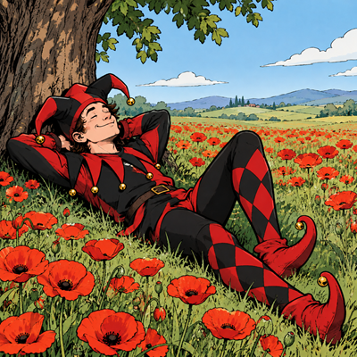

~~ VI ~~
- Te he llamado esta mañana, pero no has contestado. Seguro que andabas, como siempre, entre los árboles. Un día cualquiera te perderás y no volveré a llamarte más.
- No puedo perderme si sabes diferenciarme de un árbol. ¿Crees que parezco un árbol? Yo siempre he pensado que me parezco a una amapola.
- He visto muchas amapolas y no son como tú. Son con más forma de amapola. Entre ellas sí que se parecen mucho. Se podría decir que son todas iguales.
- ¡Qué dices insensato! ¿Cómo se te ocurre? Ahora me pondré a llorar y no pararé hasta la hora de la cena. Todas las amapolas son diferentes entre sí. Las hay guapas y feas, simpáticas y desagradables, altas y bajitas pero resultonas. Son como los árboles pero son amapolas.
- Nunca he visto un árbol que se pareciese a una amapola; no sé si creerte. Últimamente estás más caprichosa de lo normal. ¿Has madrugado mucho hoy? Podrías haberte quedado más rato en la cama. Luego hará más calor.
- Ya estás cambiando de tema. Eres incorregible cuando te pones tumultuoso. Así no me gustas. Me pongo frágil y me asusto mucho después de la siesta. Si me haces reír te diré cómo no parecer un árbol nunca.
- Ahora estoy muy ocupado buscándote entre los árboles.
- ¡Pues llámame!
- Ya lo hago, pero no me contestas.
Fin.